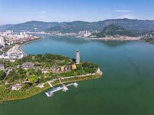
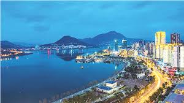
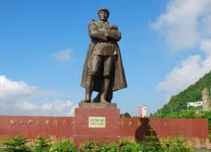
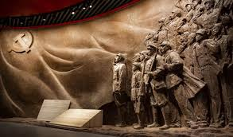
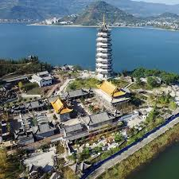
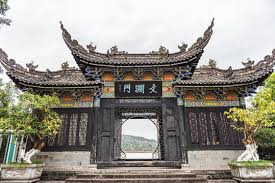
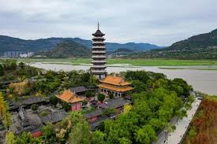

汉丰湖
汉丰湖是开州城市名片，湖岸线开阔，湿地与城市景观自然交融。游客可沿滨湖步道骑行、慢跑和观鸟，夜间还能欣赏水岸灯光与城市夜色，适合家庭休闲、摄影打卡与城市微度假体验。
开州兼具“城在湖中、湖在城中”的灵动水韵与山林层叠的生态气质，既有汉丰湖湿地景观、雪宝山森林康养等自然风光，也有刘伯承同志纪念馆等承载革命记忆的红色地标，还有举子园所代表的巴渝人文脉络。游客可在慢行观景、研学体验、亲子休闲和文化漫游之间自由切换，感受开州“可观、可学、可游、可住”的多元文旅魅力。


汉丰湖是开州城市名片，湖岸线开阔，湿地与城市景观自然交融。游客可沿滨湖步道骑行、慢跑和观鸟，夜间还能欣赏水岸灯光与城市夜色，适合家庭休闲、摄影打卡与城市微度假体验。



纪念馆通过史料展陈、珍贵文物与沉浸式叙事，系统呈现刘伯承元帅的革命历程和家国情怀。整体氛围庄重肃穆，兼具教育性与参观性，是开展红色研学、党史学习与爱国主义教育的重要场所。

雪宝山森林覆盖率高，山地生态系统完整，四季景致分明。夏季清凉宜人，适合避暑康养；春秋时节适合轻徒步、自然观察和露营体验。这里是感受开州生态底色与山林宁静的理想去处。



举子园以科举文化与地方文脉展示为核心，通过园林空间、文化小品和主题展陈，呈现开州重教崇文的历史传统。园区游览节奏舒缓，既适合亲子共游，也适合文化研学与拍照打卡。
汉丰湖串联城市空间与生态岸线，形成“水景入城、城景映湖”的立体画卷，昼夜景观层次丰富。
红色场馆与史料展陈内容充实，教育意义突出，适合开展爱国主义教育和沉浸式研学活动。
雪宝山拥有高覆盖森林与清爽气候，徒步、观景、康养等活动空间充足，生态体验感强。
举子园融合园林美学与地方文脉表达，文化氛围浓厚，适合慢游、拍照和家庭休闲出行。
汉丰湖 → 刘伯承同志纪念馆 → 举子园
上午湖畔观景，中午城区用餐，下午进行红色文化参观与人文园林漫游，节奏紧凑且体验完整。
第一天城区文化游 · 第二天雪宝山生态游
首日围绕湖城风光与红色人文展开，次日前往雪宝山进行轻徒步和森林康养，适合周末深度出行。